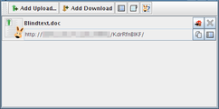
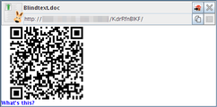
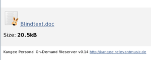

Kangee
Dieser Artikel wurde für die folgenden Ubuntu-Versionen getestet:
Ubuntu 14.04 Trusty Tahr
Zum Verständnis dieses Artikels sind folgende Seiten hilfreich:
Das auf Java basierende Kangee  ermöglicht einen Dateiaustausch im Stil von One-Click-Hostern über den eigenen Rechner. Es gibt Installationspakete für verschiedene Linux-Distributionen sowie einen Windows-Installer. Der Quellcode wird über Google Code verwaltet und zusätzlich als separater Download angeboten. Die Programmoberfläche ist nur in Englisch verfügbar.
ermöglicht einen Dateiaustausch im Stil von One-Click-Hostern über den eigenen Rechner. Es gibt Installationspakete für verschiedene Linux-Distributionen sowie einen Windows-Installer. Der Quellcode wird über Google Code verwaltet und zusätzlich als separater Download angeboten. Die Programmoberfläche ist nur in Englisch verfügbar.
Ist Kangee installiert und wurde der Verbindungstest erfolgreich absolviert, kann ein Benutzer eine Datei, die er anderen Leuten senden will, in das Programmfenster ziehen und erhält eine Internet-Adresse (URL). Letztere kann nun beispielsweise über Instant Messenger oder im Facebook-Chat an andere Personen versandt werden.
Nette Kleinigkeiten wie die Verwendung von QR-Codes oder verschiedene Themen für den Browser runden das Programm ab. Leider scheint die Weiterentwicklung des Programms eingeschlafen zu sein.
Funktionsweise¶
Technisch gesehen ist Kangee ein sehr benutzerfreundlicher HTTP-Fileserver, der URLs für die ausgetauschten Dateien generiert und die Netzwerkeinstellungen (IP-Adresse usw.) automatisch ermittelt. Problematisch für den Verbindungsaufbau sind NAT und Firewalls (siehe Portweiterleitung), die überwunden werden müssen. Kangee versucht diesem Problem mit einem umfangreichen Verbindungstest zu begegnen. Hierfür wurde ein eigener UPnP-Stack entwickelt.
Nur für diesen Verbindungstest verwendet das Programm einen externen Server.
Voraussetzungen¶
Die Server-Komponente von Kangee verwendet Java. Hinweise zur Installation einer Java-Laufzeitumgebung (JRE) in der Version 6 oder neuer sind im Artikel Java/Installation zu finden. Für den reinen Zugriff auf eine Datei wird nur ein Browser oder ein Kommandozeilenwerkzeug wie wget benötigt.
Online-Nutzung¶
Statt der nachfolgend beschriebenen Installation auf dem eigenen Rechner kann man auch Java Web Start für Kangee verwenden (nach einen Hinweis auf die Lizenzbedingungen): start.jnlp  . Dann nutzt man automatisch immer die neueste Version.
. Dann nutzt man automatisch immer die neueste Version.
Installation¶
Kangee ist kein Bestandteil der offiziellen Paketquellen.
Fremdpaket¶
Für Ubuntu gibt es ein DEB-Paket, das über die Projektseite heruntergeladen und manuell installiert [1] werden kann.
Hinweis!
Fremdpakete können das System gefährden.
Bedienung¶
Bei Ubuntu-Varianten mit einem Anwendungsmenü kann Kangee über "Internet -> Kangee" gestartet werden.
Vor dem Start führt Kangee einen optionalen Verbindungstest durch, der prüft, ob die Anwendung aus dem Internet erreichbar ist. Falls möglich, konfiguriert sich Kangee dabei über UPnP selbst, ansonsten muss der jeweilige Port über den Router/die Firewall freigeschaltet [2] werden.
Nun kann eine Datei in das Kangee-Hauptfenster gezogen werden oder per "Add Upload..." hinzugefügt werden. Die nun in der Dateiliste auftauchende URL kann an Freunde oder Kollegen gesendet werden, die sich anschließend die Datei herunterladen können.
Möchte man eine Datei von jemandem zugesendet bekommen, ermöglicht das Klicken auf "Add Download" das Anlegen einer URL, über die andere Personen nun Dateien per Browser hochladen können. Von dort muss die Datei noch auf die Festplatte gespeichert werden.
|  |
| Hauptfenster |
|  |
| Details mit QR-Code |
|  |
| Herunterladen im Webbrowser |
Auf dem Server (sprich bei der- oder demjenigen, der Kangee gestartet hat) bleibt die Anwendung nach dem Schließen der Programmfensters weiterhin aktiv. Erneut geöffnet wird das Fenster über das Symbol im Panel. Erst ein  auf das Symbol bringt die Möglichkeit zum Beenden des Programms zum Vorschein.
auf das Symbol bringt die Möglichkeit zum Beenden des Programms zum Vorschein.
Die Programmeinstellungen und temporäre Uploads werden im Ordner ~/.kangee/ im Homeverzeichnis gespeichert.
Sicherheit¶
Kangee ermöglicht eine Authentifizierung über eine in der URL befindliche Zufallszeichenkette. Vertraulichkeit und Integrität durch Kryptographie sind jedoch durch Beschränkungen des zugrunde liegenden HTTP-Protokolls nicht möglich. Vertrauliche Daten sollten daher vor dem Hoch- oder Herunterladen zusätzlich verschlüsselt werden (siehe auch Daten verschlüsseln).
Links¶
Kangee herunterladen
und Hinweise auf Deutsch zur Nutzung des ProgrammsQR Code Reader for Your Phone
- Anwendungen für iPhone und Android
Instant Webserver
 Alternative Programme, allerdings ohne grafische Benutzeroberfläche
Alternative Programme, allerdings ohne grafische Benutzeroberfläche
- Erstellt mit Inyoka
-
 2004 – 2017 ubuntuusers.de • Einige Rechte vorbehalten
2004 – 2017 ubuntuusers.de • Einige Rechte vorbehalten
Lizenz • Kontakt • Datenschutz • Impressum • Serverstatus -
Serverhousing gespendet von